<!DOCTYPE html>
<html lang="en">

<head>
  <meta charset="utf-8" />
  <meta name="viewport" content="width=device-width, initial-scale=1.0, maximum-scale=1.0, user-scalable=no" />

  <title>Platform Agnostic Bytecode</title>
  <link rel="shortcut icon" href="./../../assets/favicon.ico" />
  <link rel="stylesheet" href="./../../dist/reset.css" />
  <link rel="stylesheet" href="./../../dist/reveal.css" />
  <link rel="stylesheet" href="./../../assets/styles/PBA-theme.css" id="theme" />
  <link rel="stylesheet" href="./../../css/highlight/shades-of-purple.css" />

  <link rel="stylesheet" href="./../.././assets/styles/custom-classes.css" />

</head>

<body class="site">
  <header class="site-header">
    <!-- This logo is a link only on the watching server, not the production build -->
    <a href="">
      
    </a>
  </header>
  <main class="reveal">
    <article class="slides">
      <section  data-markdown><script type="text/template">

# Platform Agnostic Bytecode
</script></section><section  data-markdown><script type="text/template">
## Review of Compilers


🤯 Fun Side Reading: <!-- .element: class="fragment" data-fragment-index="1" -->
[Reflections on Trusting Trust](https://www.cs.cmu.edu/~rdriley/487/papers/Thompson_1984_ReflectionsonTrustingTrust.pdf) <!-- .element: class="fragment" data-fragment-index="1" -->

<aside class="notes"><p>Just a very quick reminder of how compilers work.
Humans write programs in some human readable language like Lauren talked about.
Then the compiler translates the semantics of that program into an equivalent program in a much lower more machine-readable language called a bytecode.</p>
<p>CLICK</p>
<p>Whenever I show this diagram or talk about compilers, I always like to mention one of my favorite essays ever.
Ken Thompson&#39;s 1984 Turing Award lecture.</p>
</aside></script></section><section  data-markdown><script type="text/template">
## Definition

A PAB is a bytecode that follows two main principles:

- Turing Completeness, as a standard bytecode would respect

<!-- .element: class="fragment" data-fragment-index="1" -->

- Support for tooling that makes it executable on every machine

<!-- .element: class="fragment" data-fragment-index="2" -->

<aside class="notes"><p>Ideally a bytecode like this is designed to be executed on a virtual machine that follows general known patterns.</p>
</aside></script></section><section ><section data-markdown><script type="text/template">
<pba-cols>
<pba-col left>

<pba-flex center>

###### High Level Languages


</pba-flex>
</pba-col>
<!-- .element: class="fragment" data-fragment-index="1" -->

<pba-col center>
<pba-flex center>

###### PABs


</pba-flex>
</pba-col>
<!-- .element: class="fragment" data-fragment-index="2" -->

<pba-col right>
<pba-flex center>

###### Architecture's bytecode


</pba-flex>
</pba-col>
<!-- .element: class="fragment" data-fragment-index="3" -->

</pba-cols>

<aside class="notes"><p>From left to right you can see different levels of abstraction over the program that will ultimately be run on some machine.
Generally, from a high level language you need two compilation step if you want to pass through a PAB.</p>
<p>Other examples of PABs used right now:</p>
<ul>
<li>Inside the Linux Kernel -&gt; eBPF</li>
<li>Inside browsers -&gt; Wasm</li>
<li>Inside Blockchains -&gt; Wasm<ul>
<li>Full nodes</li>
<li>Light nodes (Wasm inside Wasm)</li>
</ul>
</li>
<li>LLVM Toolchain -&gt; LLVM IR</li>
</ul>
</aside></script></section><section data-markdown><script type="text/template">
## Compiling in a PAB

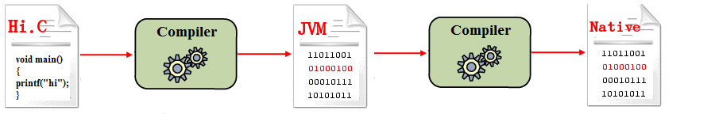

<aside class="notes"><p>So when we are using a PAB, we need to compile twice.
This is, of course, the cost to using a PAB.
In this lesson we&#39;ll also explore the advantages.</p>
</aside></script></section></section><section ><section data-markdown><script type="text/template">
#### What a PAB allows is:

<pba-flex center>

- Portability
  <!-- .element: class="fragment" data-fragment-index="1" -->
      - Avoid Hardware Centralization
  <!-- .element: class="fragment" data-fragment-index="3" -->
- Determinism
  <!-- .element: class="fragment" data-fragment-index="2" -->
      - Make consensus possible
  <!-- .element: class="fragment" data-fragment-index="4" -->

</pba-flex>

<aside class="notes"><p>The main goal of a PAB is to make the code <strong>portable</strong>, you should be able to compile it once and then share it around without caring about the architecture on which will be executed. Of course in a decentralized network we want that different nodes, with different architectures came up to the same result if the input are the same, that&#39;s called <strong>determinism</strong>, if a PAB would not have determinism then reaching consensus is impossible.</p>
</aside></script></section><section data-markdown><script type="text/template">
##### That's why PABs are so important
</script></section></section><section ><section data-markdown><script type="text/template">
## Desireable Features

- Hardware Independence
<!-- .element: class="fragment" data-fragment-index="1" -->
- Efficiency
<!-- .element: class="fragment" data-fragment-index="2" -->
- Tool Simplicity
<!-- .element: class="fragment" data-fragment-index="3" -->
- Support as Compilation Target
<!-- .element: class="fragment" data-fragment-index="4" -->
- Sandboxing
<!-- .element: class="fragment" data-fragment-index="5" -->

<aside class="notes"><ul>
<li>Hardware Independence: It should not be tightly related to a specific architecture, otherwise the execution on different machine could be convoluted</li>
<li>Efficiency: the execution of a PAB should be efficient, the problem for a PAB is that in the execution time is also considered the &quot;translation&quot; to the machine&#39;s bytecode or the interpretation</li>
<li>Support as Compilation Target: The PAB should be possible to be compiled by as many as possible High Level languages</li>
<li>Tool Simplicity: If the tools that makes the PAB executable are extremely complex then nobody will use it</li>
</ul>
</aside></script></section><section data-markdown><script type="text/template">
### Sandboxing?

An environment for running untrusted code without affecting the host.

<!-- .element: class="fragment" data-fragment-index="1" -->


A SmartContract is _Arbitrary Code_ that may be executed on other people's infrastructure, we don't want SmartContracts capable of destroying the nodes on which they are executed

<!-- .element: class="fragment" data-fragment-index="2" -->

<aside class="notes"><p>CLICK read definition</p>
<p>The term sandbox is an analogy to kids playing in a sandbox.
The parent puts the kid in the sandbox and tells them they can play in the sandbox and they are safe as long as they stay in.
Don&#39;t go in the woods and get bitten by a snake or in the road and get hit by a car.
Just stay in the sandbox.</p>
<p>Of course the analogy isn&#39;t perfect.
The children in the sandbox stay there because the parent asked them to.
They could leave anytime they wanted to.
For actual untrusted code, a better analogy would be a walled garden or a Jail</p>
</aside></script></section><section data-markdown><script type="text/template">
### Sandboxing?

 <!-- .element: class="fragment" data-fragment-index="1" -->

A sandboxed environment must be created by the executor of the PAB.

<!-- .element: class="fragment" data-fragment-index="2" -->

<aside class="notes"><p>Of course the security can be seen by various point of view and some examples are:</p>
<ul>
<li>Compilation takes too much time -&gt; compiling bomb</li>
<li>Access to the environment -&gt; &quot;buffer overflow&quot; techniques</li>
</ul>
<p>Those things can&#39;t be addressed by the PAB itself but they can give good guidelines and code design to make an 100% secure implementation of the executor possible.</p>
</aside></script></section></section><section  data-markdown><script type="text/template">
## PAB's lifecycle example

<div class="r-stack">

<!-- .element: class="fragment" data-fragment-index="1" -->
<!-- .element: class="fragment" data-fragment-index="2" -->

<!-- .element: class="fragment" data-fragment-index="3" -->
<!-- .element: class="fragment" data-fragment-index="4" -->

<!-- .element: class="fragment" data-fragment-index="5" -->
</div>
</script></section><section  data-markdown><script type="text/template">
<!-- .slide: data-background-color="#4A2439" -->


</script></section><section  data-markdown><script type="text/template">
<pba-cols>
<pba-col center>

# WebAssembly

<!-- .element: class="fragment" data-fragment-index="1" -->

</pba-col>
<pba-col center>


</pba-col>
</pba-cols>
</script></section><section  data-markdown><script type="text/template">
## Wasm's key points

<pba-flex center>

- Hardware-independent
  <!-- .element: class="fragment" data-fragment-index="1" -->
  - Binary instruction format for a stack-based virtual machine
  <!-- .element: class="fragment" data-fragment-index="1" -->
- Supported as compilation target by many languages
  <!-- .element: class="fragment" data-fragment-index="2" -->
  - Rust, C, C++ and many others
  <!-- .element: class="fragment" data-fragment-index="2" -->
- Fast (with near-native performance)
<!-- .element: class="fragment" data-fragment-index="3" -->
- Safe (executed in a sandboxed environment)
<!-- .element: class="fragment" data-fragment-index="4" -->
- Open (programs can interoperate with their environment)
<!-- .element: class="fragment" data-fragment-index="5" -->

</pba-flex>

<aside class="notes"><p>Wasm seems to respect every rating points we defined before</p>
</aside></script></section><section  data-markdown><script type="text/template">
## Stack-Based Virtual Machine Example

<pba-cols>
<pba-col center>

Adding two number in wasm text representation (.wat)

<!-- .element: class="fragment fade-out" data-fragment-index="1" -->

```wasm [1-12|5|6|8]
(module
  (import "console" "log" (func $log (param i32)))
  (func $main
    ;; load `10` and `3` onto the stack
    i32.const 10
    i32.const 3

    i32.add ;; add up both numbers
    call $log ;; log the result
  )
  (start $main)
)
```

<!-- .element: class="fragment" data-fragment-index="0" -->

</pba-col>
<pba-col center>

<div class="r-stack">

<!-- .element: class="fragment" data-fragment-index="1" -->
<!-- .element: class="fragment" data-fragment-index="2" -->

<!-- .element: class="fragment" data-fragment-index="3" -->

<!-- .element: class="fragment" data-fragment-index="4" -->
<!-- .element: class="fragment" data-fragment-index="5" -->

<!-- .element: class="fragment" data-fragment-index="6" -->
</div>

</pba-col>
</pba-cols>

<aside class="notes"><p>Wasm has also a text representation,
Wat has some features that allow for better readability:</p>
<ul>
<li>Stack push operations can be grouped to its consuming instruction.</li>
<li>Labels can be applied to elements.</li>
<li>Blocks can enclosed with parenthesis instead of explicit start/end instructions.</li>
</ul>
<p>Instructions push results to the stack and use values on the stack as arguments, the compilation process generally translate this stack-based bytecode to register based, where registers are used to pass values to instructions as a primary mechanism. The compilation will try to elide the wasm stack and work with only the architecture registers.</p>
<p>There is another type of stack used in wasm and that&#39;s called: shadow stack, resource to learn more: <a href="https://hackmd.io/RNp7oBzKQmmaGvssJDHxrw">https://hackmd.io/RNp7oBzKQmmaGvssJDHxrw</a></p>
</aside></script></section><section  data-markdown><script type="text/template">
## Wasm seems to be a perfect PAB, but

- How does communication with the environment work?
<!-- .element: class="fragment" data-fragment-index="1" -->
- How the memory is managed?
<!-- .element: class="fragment" data-fragment-index="2" -->
- How is it executed?
<!-- .element: class="fragment" data-fragment-index="4" -->

<aside class="notes"><p>Assuming all the things we said before wasm seems to be perfect but how those things really works?</p>
</aside></script></section><section ><section data-markdown><script type="text/template">
## Communication with the Environment

Let's call **Embedder** the program that will take the wasm blob as input and execute it

<!-- .element: class="fragment" data-fragment-index="0" -->

- the wasm blob may expect parameters from the embedder
  - embedder -> wasm

<!-- .element: class="fragment" data-fragment-index="1" -->

- the embedder may act on a return value from the wasm
  - wasm -> embedder

<!-- .element: class="fragment" data-fragment-index="2" -->
</script></section><section data-markdown><script type="text/template">
### Problem

**Wasm has no ambient access to the computing environment in which code is executed**

</br>

### Solution

<!-- .element: class="fragment" data-fragment-index="1" -->

<!-- .element: class="fragment" data-fragment-index="1" -->

<aside class="notes"><ul>
<li>Every interaction with the environment can be done only by a set of functions, called <strong>Host Functions</strong>, provided by the embedder and imported in wasm</li>
<li>The embedder is able to call the functions defined in wasm blob, called <strong>Runtime API</strong>, and pass arguments through a shared memory</li>
</ul>
</aside></script></section></section><section ><section data-markdown><script type="text/template">
## Memory

In addition to the stack Wasm has also access to memory provided by the embedder, the **Linear Memory**.

<!-- .element: class="fragment" data-fragment-index="0" -->

</br>

- This area will be used also used as a frontier for data sharing
- To make everything secure the Embedder is doing incredibly convoluted things

<!-- .element: class="fragment" data-fragment-index="1" -->

<aside class="notes"><p>From Wasm the Linear Memory is byte addressable
Linear Memory can be manipulated using functions called &#39;store&#39; and &#39;load&#39;</p>
<p>The Rust compiler uses for dynamic/heap memory and to pass non primitives values to functions by emulating an additional stack within the linear memory, this emulated stack (the shadow stack) is what we would understand as stack in other architectures</p>
</aside></script></section><section data-markdown><script type="text/template">
### Example

<div class="r-stack">

<!-- .element: class="fragment fade-out" data-fragment-index="1" -->
<!-- .element: class="fragment" data-fragment-index="1" -->
</div>

<aside class="notes"><p>Here&#39;s an example, wasm sees linear memory like a byte array and if it tries to access the second byte, it would use an index 1. When it&#39;s time to execute it the embedder will see this access and translate the linear memory access at index 1 to a standard memory access to base_linear_memory + 1.</p>
<p>Buffer overflow? Wasm uses 32 bit, this makes impossible to have an offset bigger then 4GiB, this means that the embedder can leave those 4GiB free in its virtual memory to makes impossible to the wasm blob to access any environment information. Even if the offset is only positive there are embedded that are defining as protected the 2GiB before the BLM so that if for some reason the wasm code trick the embedder to treat the offset as a signed number that would cause an Operating System error.</p>
</aside></script></section></section><section ><section data-markdown><script type="text/template">
## How Wasm is executed

<pba-flex left>

There are multiple ways to execute wasm:

- Ahead Of Time Compilation
- Just in Time Compilation
- Single Pass Compilation
- Interpretation
- ...

<!-- .element: class="fragment" data-fragment-index="1" -->

</pba-flex >

<aside class="notes"><p>AOT: Compile all the code at the beginning, this allows to makes a lot of improvement to the final code efficiency
JIT: The code is compiled only when needed, examples are functions that are compiled only when called, this leave space only to partials improvements
SPC: This is a specific technique of compilation that is made in linear time, the compilation is done only passing once on the code
Interpretation: The wasm blob is treated as any other interpreted language and executed in a Virtual Machine</p>
</aside></script></section><section data-markdown><script type="text/template">
### Wasmtime

- It is a stand alone wasm environment
- Wasmtime is built on the optimizing Cranelift code generator to quickly generate high-quality machine code either at runtime (JIT) or ahead-of-time (AOT)
- It executes the compiled wasm blob in sandboxed environment while keeping everything extremely secure

<!--TODO: graphics-->

<aside class="notes"><ul>
<li>wasmtime book: <a href="https://docs.wasmtime.dev/">https://docs.wasmtime.dev/</a></li>
<li>Used in substrate as embedder for the blockchain logic</li>
</ul>
<p>Cranelift is a fast, secure, relatively simple and innovative compiler backend. It takes an intermediate representation of a program generated by some frontend and compiles it to executable machine code</p>
</aside></script></section><section data-markdown><script type="text/template">
#### Wasm lifecycle in Wasmtime

<div class="r-stack">

<!-- .element: class="fragment" data-fragment-index="1" -->
<!-- .element: class="fragment" data-fragment-index="2" -->

<!-- .element: class="fragment" data-fragment-index="3" -->
</div>
</script></section><section data-markdown><script type="text/template">
### Wasmi

- It is a wasm environment with support for embedded environment such as WebAssembly itself
- Focus on simple, correct and deterministic WebAssembly execution
- The technique of execution is interpretation but:
  - The wasm code is transpiled to WasmI IR, another stack-based bytecode
  - The WasmI IR is then interpreted by a Virtual Machine

<!--TODO: graphics-->

<aside class="notes"><p>proposal to switch from a stack based ir to registry based ir <a href="https://github.com/paritytech/wasmi/issues/361">https://github.com/paritytech/wasmi/issues/361</a></p>
<p>paper explaining the efficiency of translating wasm to registry based code <a href="https://www.intel.com/content/www/us/en/developer/articles/technical/webassembly-interpreter-design-wasm-micro-runtime.html">https://www.intel.com/content/www/us/en/developer/articles/technical/webassembly-interpreter-design-wasm-micro-runtime.html</a> <!-- markdown-link-check-disable-line --></p>
<p>Due to it&#39;s characteristics it is mainly used to execute SmartContracts on chain</p>
</aside></script></section><section data-markdown><script type="text/template">
#### Wasm lifecycle in Wasmi

<div class="r-stack">


<!-- .element: class="fragment" data-fragment-index="1" -->
<!-- .element: class="fragment" data-fragment-index="2" -->
<!-- .element: class="fragment" data-fragment-index="3" -->
</div>

<!-- Really nice slide but there's not enough knowledge about substrate

There are also light clients, where both Runtime and Client are implemented in wasm, so we have:

- A browser as embedder of the node's client
  - the node's client as embedder for the node's runtime
    - the node's runtime as embedder for the SmartContract


We have a double recursion of a PAB that embed itself

-->
</script></section></section><section ><section data-markdown><script type="text/template">
# Alternatives
</script></section><section data-markdown><script type="text/template">
## EVM

- The **Ethereum Virtual Machine** executes a stack machine
  - Interesting: here the bytecode was create to be executed in a blockchain, so instructions are not hardware-dependent but there are instruction tightly related to Cryptography and others blockchain instructions
</script></section><section data-markdown><script type="text/template">
## CosmWasm

- Wasm is always used but with different tools
- They use CosmWasm as Embedder and internally is used Wasmer, a Single Pass Compiler
</script></section><section data-markdown><script type="text/template">
## Solana eBPF

- eBPF is used as PAB, but intrinsically eBPF has a lot of restrictions
- Solana forked the eBPF backend of LLVM to makes every program to be compiled in eBPF
- The Embedder is rBFP, a virtual machine for eBPF programs

<aside class="notes"><p><a href="https://forum.polkadot.network/t/ebpf-contracts-hackathon/1084">https://forum.polkadot.network/t/ebpf-contracts-hackathon/1084</a></p>
</aside></script></section><section data-markdown><script type="text/template">
## RISC-V ?!

- RISC-V is a new instruction-set architecture
- main goals are:
  - real ISA suitable for direct native hardware implementation
  - avoids “over-architecting”

</br>

Being so simple and "Hardware-Independent" there are work in progress experiments to test if it is suitable to become the new polkadot smart contract language

<aside class="notes"><p>Discussion about using RISC-V as smart contract language: <a href="https://forum.polkadot.network/t/exploring-alternatives-to-wasm-for-smart-contracts/2434">https://forum.polkadot.network/t/exploring-alternatives-to-wasm-for-smart-contracts/2434</a></p>
<p>RISC-V Instruction Set Manual, Unprivileged ISA: <a href="https://github.com/riscv/riscv-isa-manual/releases/download/Ratified-IMAFDQC/riscv-spec-20191213.pdf">https://github.com/riscv/riscv-isa-manual/releases/download/Ratified-IMAFDQC/riscv-spec-20191213.pdf</a></p>
</aside></script></section></section><section ><section data-markdown><script type="text/template">
## Activity: Compiling Rust to Wasm

- Let's make a simple Rust crate that compiles to Wasm!
- Clone the repo
</script></section><section data-markdown><script type="text/template">
### Activity: Compiling Rust to Wasm

- A target triple consists of three strings separated by a hyphen, with a possible fourth string at the end preceded by a hyphen.
- The first is the **architecture**, the second is the **"vendor"**, the third is the **OS type**, and the optional fourth is environment type.

* `wasm32-unknown-emscripten`: Legacy, provides some kind of `std`-like environment
* `wasm32-unknown-unknown` ✓ WebAssembly: Can compile anywhere, can run anywhere, no `std`
* `wasm32-wasi` ✓ WebAssembly with WASI
</script></section><section data-markdown><script type="text/template">
### Rust -> Wasm Details

```rust
#[no_mangle] // don't re-name symbols while linking
pub extern "C" fn add_one() { // use C-style ABI
  ...
}
```

and if a library:

```
[lib]
crate-type = ["cdylib"]
```
</script></section><section data-markdown><script type="text/template">
### Activity: Compiling Rust to Wasm

```
rustup target add wasm32-unknown-unknown

cargo build --target wasm32-unknown-unknown --release

wasmtime ./target/wasm32-unknown-unknown/release/wasm-crate.wasm --invoke <func_name> <arg1> <arg2> ...
```
</script></section><section data-markdown><script type="text/template">
## Additional Resources! 😋

> Check speaker notes (click "s" 😉)

<aside class="notes"><ul>
<li><p>More on PAB:</p>
<ul>
<li><a href="https://github.com/gabriele-0201/IPABDN/blob/main/thesis/IPABDN.pdf">https://github.com/gabriele-0201/IPABDN/blob/main/thesis/IPABDN.pdf</a></li>
</ul>
</li>
<li><p>More on Rust target spec:</p>
<ul>
<li><a href="https://rust-lang.github.io/rfcs/0131-target-specification.html">https://rust-lang.github.io/rfcs/0131-target-specification.html</a></li>
</ul>
</li>
<li><p>Lin Clark&#39;s awesome talks on WASI (not super relevant to our work though):</p>
<ul>
<li><a href="https://www.youtube.com/watch?v=fh9WXPu0hw8">https://www.youtube.com/watch?v=fh9WXPu0hw8</a></li>
<li><a href="https://www.youtube.com/watch?v=HktWin_LPf4">https://www.youtube.com/watch?v=HktWin_LPf4</a></li>
</ul>
</li>
<li><p><code>wasm-unknown</code> vs <code>wasm-wasi</code>:</p>
<ul>
<li><a href="https://users.rust-lang.org/t/wasm32-unknown-unknown-vs-wasm32-wasi/78325/5">https://users.rust-lang.org/t/wasm32-unknown-unknown-vs-wasm32-wasi/78325/5</a></li>
</ul>
</li>
<li><p><code>extern &quot;C&quot;</code>:</p>
<ul>
<li><a href="https://doc.rust-lang.org/std/keyword.extern.html">https://doc.rust-lang.org/std/keyword.extern.html</a></li>
<li><a href="https://doc.rust-lang.org/book/ch19-01-unsafe-rust.html#using-extern-functions-to-call-external-code">https://doc.rust-lang.org/book/ch19-01-unsafe-rust.html#using-extern-functions-to-call-external-code</a></li>
</ul>
</li>
<li><p>Chapter 11 of this book is a great read: <a href="https://nostarch.com/rust-rustaceans">https://nostarch.com/rust-rustaceans</a></p>
</li>
</ul>
</aside></script></section></section>
    </article>
  </main>

  <script src="./../../dist/reveal.js"></script>

  <script src="./../../plugin/markdown/markdown.js"></script>
  <script src="./../../plugin/highlight/highlight.js"></script>
  <script src="./../../plugin/zoom/zoom.js"></script>
  <script src="./../../plugin/notes/notes.js"></script>
  <script src="./../../plugin/math/math.js"></script>

  <script src="./../../assets/plugin/mermaid.js"></script>
  <script src="./../../assets/plugin/mermaid-theme.js"></script>

  <script src="./../../assets/plugin/chart/chart.js"></script>
  <script src="./../../assets/plugin/chart/chart.min.js"></script>

  <script src="./../../assets/plugin/tailwindcss.min.js"></script>

  <script>
    function extend() {
      var target = {};
      for (var i = 0; i < arguments.length; i++) {
        var source = arguments[i];
        for (var key in source) {
          if (source.hasOwnProperty(key)) {
            target[key] = source[key];
          }
        }
      }
      return target;
    }

    // default options to init reveal.js
    var defaultOptions = {
      controls: true,
      progress: true,
      history: true,
      center: true,
      transition: 'default', // none/fade/slide/convex/concave/zoom
      slideNumber: true,
      mermaid: {
        startOnLoad: false,
        logLevel: 3,
        theme: 'base',
        themeVariables: {
          primaryColor: purple,
          primaryTextColor: white,
          primaryBorderColor: pink,
          lineColor: pink,
          secondaryColor: lightPurple,
          tertiaryColor: lightPurple,
        },
      },
      chart: {
        defaults: {
          color: 'lightgray', // color of labels
          scale: {
            beginAtZero: true,
            ticks: { stepSize: 1 },
            grid: { color: "lightgray" }, // color of grid lines
          },
        },
        line: { borderColor: ["#ccc", "#E6007A", "#6D3AEE"], "borderDash": [[5, 10], [0, 0]] },
        bar: { backgroundColor: ["#ccc", "#E6007A", "#6D3AEE"] },
      },
      plugins: [
        RevealMarkdown,
        RevealHighlight,
        RevealZoom,
        RevealNotes,
        RevealMath,
        RevealMermaid,
        RevealChart
      ]
    };

    // options from URL query string
    var queryOptions = Reveal().getQueryHash() || {};

    var options = extend(defaultOptions, {"width":1400,"height":900,"margin":0,"minScale":0.2,"maxScale":2,"transition":"none","controls":true,"progress":true,"center":true,"slideNumber":true,"backgroundTransition":"fade"}, queryOptions);
  </script>


  <script>
    Reveal.initialize(options);
  </script>
</body>

</html>